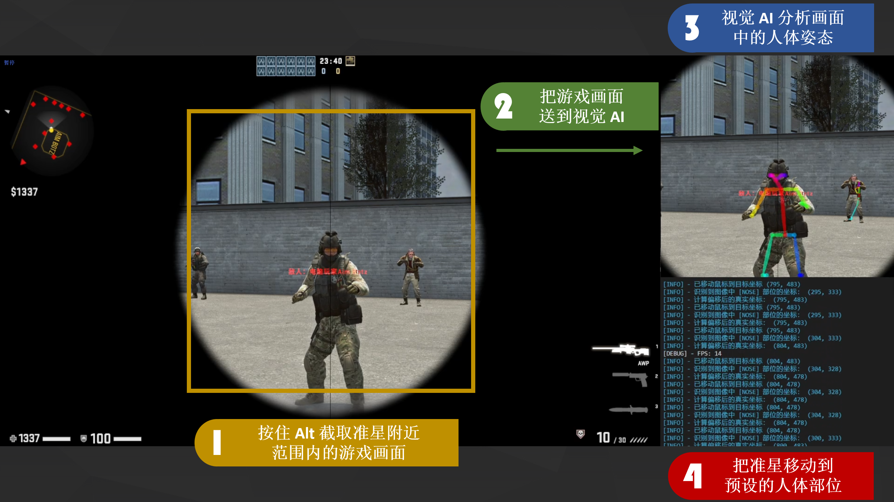
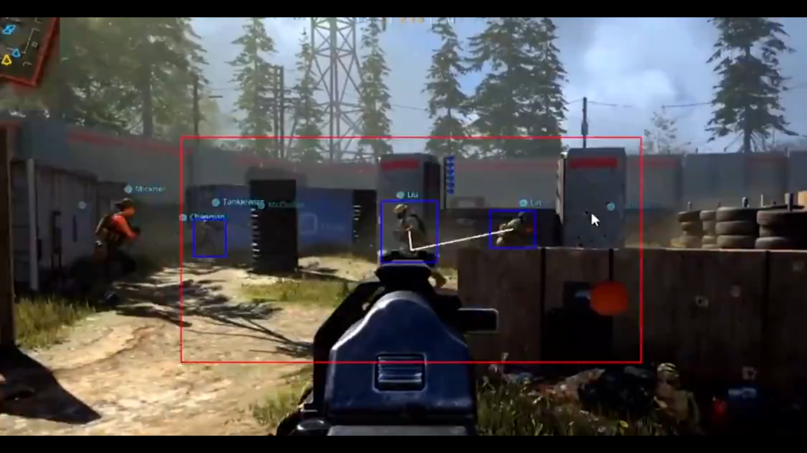
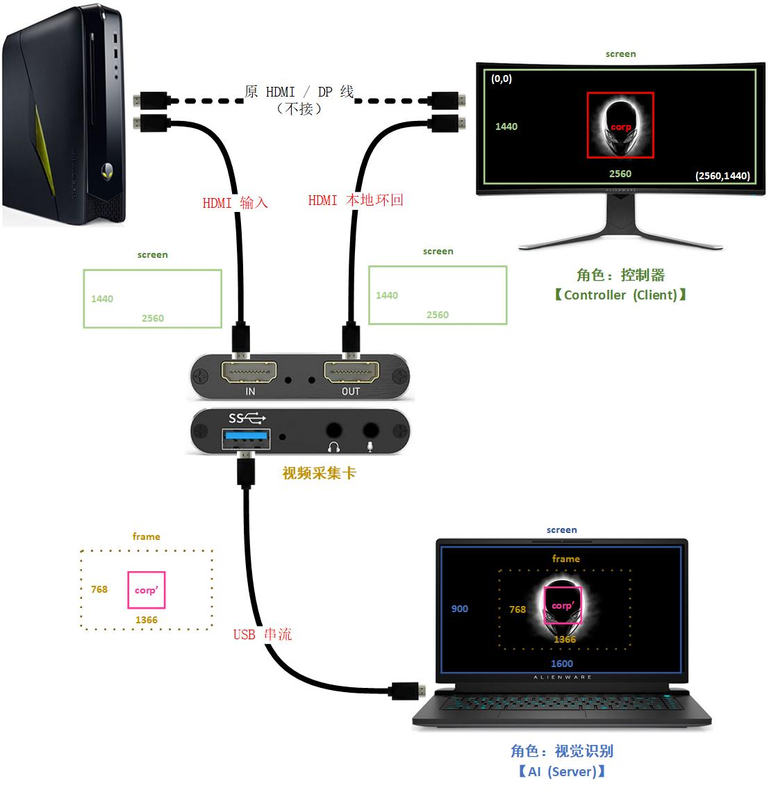
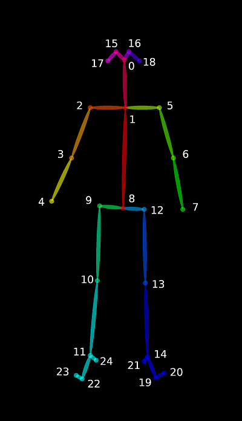
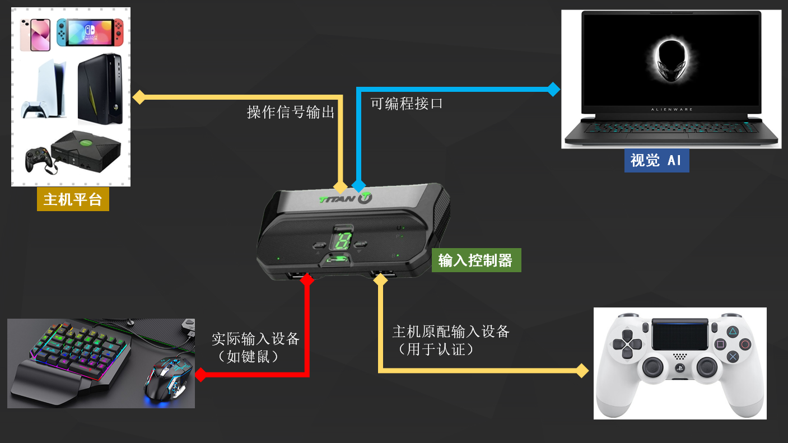
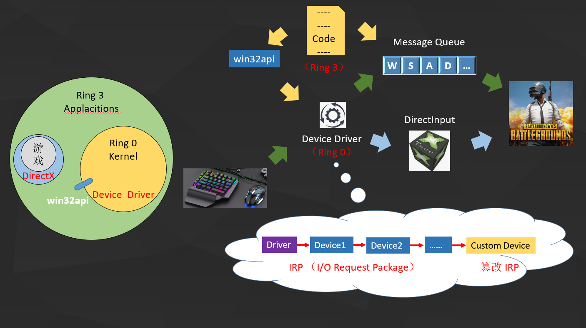

0x00 配套讲解视频
视频内容与下文基本一致，按需食用（因需遵守本地法律法规，视频在 Youtube 上有限公开）
配套资料：
- PPT : 《弹无虚发？视觉 AI 杀疯了！》
- 成品: 《视觉 AI : 多平台实机演示视频》（因需遵守本地法律法规，视频在 Youtube 上有限公开）
- 源码: Github: AI-visual-training-cheater （因需遵守本地法律法规，源码暂不公开）
0x10 声明
本文会抛砖引玉地浅谈视觉 AI 的原理，但这并非是教大家如何制作外挂，而是希望可以针对性地提供一些反制视觉 AI 的思路。
所以在这里先严正声明：
- 本人坚决反对使用任何形式的游戏辅助去破坏游戏的公平性
- 贩卖游戏外挂，是涉嫌严重的违法犯罪行为
我仅仅是出于学习目的才研究这个主题，希望大家千万不要铤而走险以身试法。
0x20 背景
大概去年（2021）年中的时候，有一个外挂团队制作了一款名为 User Vision Pro 的视觉 AI 软件，并且在 Youtube 发布了一个宣传视频，视频的内容主要是针对使命召唤的 AI 自瞄辅助，而且号称是世界第一的、跨平台的 “无法检测” 和 “无法封禁” 的 AI 外挂。
这个视频刚出没多久，原作者就被动视请去喝茶了，回来之后就宣布 “不干了”（其实黑市还在卖），相关的宣传视频也被要求全部下架。
目前只能从 Twitter 的 @Anti-Cheat Police Department（反作弊警察局） 找到这段视频的存档。
0x30 现状
到现在（2022）已经时隔一年了，不难发现国内外各种模仿视觉 AI 的外挂层出不穷，可以说最初的 User Vision Pro 彻底打开了潘多拉魔盒。
再回想起当时动视的反应这么迅速，确实是有其先见之明。
0x40 特点
视觉 AI 外挂之所以刚出现就能引起轩然大波，主要还是因为它跟传统的外挂不一样：
| - | 运行模式 | 作弊手段 | 操作反馈 |
|---|---|---|---|
| 传统外挂 | 一般需要依附于游戏进程运行 | 篡改游戏的内存或者文件数据 | 向服务器发送作弊指令，例如子弹追踪、穿墙、透视等 （在游戏的规则之外） |
| 视觉 AI | 完全独立于游戏之外运行 | 纯粹分析游戏画面 | 交互方式和的范围和人类一样 （在游戏的规则之内） |
所以从理论上来说，在没有针对 AI 外挂的对抗手段之前，传统的反外挂程序确实没法检测和封禁 AI 外挂。
但理论终究是理论，实际上视觉 AI 外挂的效果到底是不是真的如此变态呢？
0x50 视觉 AI 原理
其实前面演示的 AI 外挂的思路并不复杂，我很快就依葫芦画瓢写了一个 MVP 框架，下面是在 CSGO 靶场测试的实机演示：
左边是 AI 在分析的画面，右边就是实际操作，基本是枪枪爆头。
现在就从我的代码框架开始，去分析整个视觉 AI 的逻辑：
- 截取游戏帧（当前画面）
- 把游戏帧送入视觉 AI
- 分析游戏帧中的人体姿态、识别预设部位的坐标
- 自动移动准星到目标坐标并射击

0x51 截取游戏帧
第一步，截取游戏帧，这个其实一般的第三方库都可以实现，例如开源视觉库 OpenCV 。
同时为了降低之后视觉 AI 分析游戏帧时给显卡带来的压力，我在实现时只截取准星附近一定范围内的游戏画面，而且只有当我按住键盘 Alt 时才会触发（类似人工识别关键帧）。
具体的原因可以通过这张图片大概讲解一下：

其实 FPS 游戏很多帧画面都是没人的，尤其像吃鸡（绝地求生 PUBG），有一大半时间都在跑图，即使有敌人也是相对集中于视野的中心。
即准星附近敌人是要优先处理的，越在外围的敌人、处理优先级越低，所以我们只需要让 AI 分析中心画面的若干关键帧即可，这样做可以大大降低 AI 检测带来的延迟。
同时分析的图片越接近人体的大小，精度就越高。
当 AI 程序和游戏都跑在同一台机器上的时候，这种优化会特别明显。
0x51 把游戏帧送入视觉 AI
第二步，把游戏帧送入视觉 AI，这里需要购置一个硬件设备：视频采集卡。
如果有做过直播推流的同学可能会比较熟悉这个东西，它就是把电脑、或者手机、掌机主机画面等等同步串流到另一台电脑上的一个硬件设备。
没用过视频采集卡的同学可能不知道是这是什么，这里画了一个示意图给大家大概了解一下：

那为什么需要视频采集卡呢？
因为如果要一边玩游戏、一边录屏推流，显卡就要分出一部分算力去做游戏渲染之外的事情。
若显卡性能不太好，直接表现出来的效果就是游戏画面会掉帧。
而视频采集卡最重要的作用就是把录屏推流的工作交给另一台电脑去执行，原本的电脑就专心渲染游戏即可。
类比到视觉 AI，它对显卡算力的消耗，相比录屏推流有过之而无不及。
因为视觉 AI 分析画面的过程，其实就是模型推理的过程，模型推理不像模型训练：
- 训练的时候显卡性能低一点没所谓，大不了等长一点时间
- 而模型推理是有硬指标规定的：人眼识别连续画面的最低帧数是
24 FPS，一般要求游戏运行时至少保持在30 FPS以上，那么神经网络一次推理的时间就不能大于33 ms（1s = 1000 ms，1000 ms / 30 F = 33 ms），太慢就会让人感觉到掉帧。尤其是在没有视频采集卡的情况下，显卡就要在渲染游戏的基础上、去跑视觉 AI 推理，这对显卡的要求是非常高的。
我的 RTX 2080 Ti 就是这样报废了 … T^T
视频采集卡的另一个作用就是跨（游戏）平台，比如你用手机玩吃鸡，或者用 PS4 玩 GTA，这些游戏平台是没法直接跑视觉 AI 的，但是把画面串流到电脑上，就可以利用视觉 AI 分析画面了。
0x53 分析游戏帧中的人体姿态 & 坐标
第三步，也是最核心的，利用视觉 AI 分析游戏帧。
在 User Vision Pro 的 Demo 中，很明显是使用了基于方框的目标检测算法。
其实像这种需要定位人体部位的游戏场景，除了方框之外还有很多选择，这里提供几个开箱即用的开源框架：
这些框架提供了已经训练好的人体姿态模型数据，不需要自己做模型训练（但精度就因环境而异了）。

另外目前用于定位人体部位的、比较常用的姿态模型是 BODY25 ：

这个模型还提供了面部/手部/足部特征点，但是可以不管它，毕竟在 FPS 游戏中并不需要对敌人做人脸识别，也不需要手势识别，我们只需要知道他的头在哪就可以了。
但是有可能敌人会被掩体遮挡，以防万一，实际上我的代码用了三个位置坐标，哪里露出来打哪里：
- 头（KeyPoint: 0）
- 躯干（KeyPoint: 1）
- 屁股（KeyPoint: 8）
但是现成的模型框架的数据基本都是用现实世界的图像去训练的，直接应用在游戏环境上，精度还是不够高。
所以要想提高精度的话，必须要自己训练模型数据，即做一下迁移学习、往游戏世界里去训练一下：一般准备三四百张游戏图像、进行人工数据标注 后喂给神经网络学习就可以了。
用游戏视频亦可训练，但需要抽取关键帧后再进行数据标注，标注方法此处不做展开
0x54 自动移动准星到目标坐标并射击
最后一步，要根据视觉 AI 的分析结果，把准星移动到目标位置（其实就是要想办法把输入送进去游戏）。
如果只是纯粹在 PC 平台上面，有键鼠就够了，甚至可能连键鼠都不需要。
如果是跨平台，则需要借助输入控制器，例如这两款：
这里有输入控制器大概的接线图（知道一下就可以了）：

输入控制器主要是用来适配其他平台的输入的，例如手机是没有输入设备的、或者希望把 PS4 手柄映射到键鼠，都可以借助输入控制器。
当然了，用输入控制器最终的目的不是为了做键位映射，而是为了从驱动层往游戏里输送 AI 的信号，去模拟键鼠操作。
这里录制了通过写入驱动实现自动移动准星追踪敌人的片段：
0x60 成品演示
通过前面 4 步，我相信大部分人都了解了视觉 AI 是如何工作的，现在来看一下最终的完成效果（因需遵守本地法律法规，视频在 Youtube 上有限公开）：
备用视频源：youtube
视频的风格我是山寨 User Vision Pro 的，但这并不重要
有了实现依据，现在就可以真正地分析一下：
- 视觉 AI 有什么优缺点
- 如何针对性地进行反制
0x70 优点
此前 B 站有个 UP 主已经总结出了视觉 AI 几个特点，这里借鉴了一下：
【通用性好】
刚刚的演示视频中出现了 3 个 FPS 游戏，我没改过一行代码就全跑下来了。
这是因为视觉 AI “看” 游戏的方式和人一样，都是识别画面作出反应的，这就意味着它可以攻陷大部分的 FPS 游戏平台。
【精准度高】
计算机比较擅长处理低级信息，在这种定位人体部位的事情上，AI 从识别头部到移动鼠标压根花不了几毫秒。
而人体反射弧相对而言就太长了，就算专业的电竞玩家，反应速度和精度也比不过计算机。
能影响计算机反应的因素只有 IO，但影响人类反应的因素则有无数的可能。
【隐蔽性强】
视觉 AI “看” 游戏的方式和人一样，它不需要读取内存再修改数据（绕过了传统反作弊程序检测的必要条件）。
换言之，AI 是完全游离在游戏数据之外进行作弊的。这好像就是三维的人在看二维的蚂蚁 —— 对传统反作弊程序而言简直就是降维打击。
0x80 缺点
所以有人就说，视觉 AI 的出现是 FPS 游戏世界的末日。
但是经我这么一整套地把视觉 AI 外挂套复原出来，其实还真未必是末日，毕竟凡事都有两面，有好必有坏：
【流行性差】
要搭建这样的一套视觉 AI，光是硬件成本就高的离谱：
- 低档的显卡都无法跑视觉 AI，中高档的显卡在至少要 8000
- 视频采集卡最低 200（不然掉帧很明显）
- 输入控制器最低 650（不跨平台可选）
硬件一套下来差不多 1W 。
而且深度学习这类的程序，目前还是科研为主，少数可以商用，远远还没普及到民用的程度，因而它对硬件的型号版本要求极其严格，尤其是显卡。
它不像其他 APP 一样，给个安装包就能到处用了，典型如 OpenPose，它必须依赖当前的硬件环境重新编译安装才能运行。
User Vision Pro 在国外的黑市还能交易，可是购买的人都因为安装极为繁琐而怨声载道。
【局限性高】
视觉 AI 的高精准度是基于很多限制条件的前提下才成立的：
- 视觉 AI 看不到画面外有没有人，即使有枪声也不会做出任何反应
- 中远距离也会导致识别效果变差，甚至完全识别不了（所以我录制的演示视频基本都是倍镜不离手）
- 视觉 AI 也不会通过武器的射程、弹道等因素做瞄准的调整
换言之，单一的视觉 AI 缺乏对高层次信息的演绎归纳能力，而这恰恰是人脑所擅长的东西。
【有迹可循】
视觉 AI 隐蔽性其实不强，我们都被表象迷惑了。
主要问题就出在视觉 AI 采用的是游戏规则之内的输入方式，这也是我们可以最简单地识别它的途径。
0x90 游戏输入原理
为了能反制视觉 AI，这里先了解一下游戏输入的大概原理：

Intel 把 CPU 的特权等级由高到低划分分为 R0 ~ R3 四个等级， 而 Windows 只用了两个等级，
- 内核层 R0: 这层只给操作系统的程序运行，设备驱动就运行在 R0
- 应用层 R3: 这层任何人的程序都可以运行，游戏就运行在 R3
此外 R0 还提供的一个接口
win32api让 R3 可以调用 R0 的部分功能
0x91 消息队列
每个应用程序在启动的时候，Windows 都会为其分配一个专属的消息队列。
在 DirectX 诞生之前，游戏获取输入的方式就是通过消息队列：键鼠通过驱动程序往队列里面写，游戏从队列里面读。
这个时候外挂要模拟键鼠的输入其实就很简单了，只需要从 R3 层模拟一个按键消息送到队列就可以了。
0x92 DirectInput
可是因为有些游戏对实时性控制的要求比较高，而消息队列不仅仅有键鼠的输入消息，导致操作会存在延迟。
于是 DirectX 就创造了 DirectInput 的输入方式 —— 直接与键鼠打交道，从此消息队列就被大部分游戏屏蔽了。
0x93 模拟游戏输入
DirectInput 出现之后，在 R3 要模拟一个输入信号，就必须要经过 R0 才能送进游戏里。
一般而言有两种方法：
- 通过
win32api调用 R0 的接口（简单但容易被针对） - 驱动开发（终极魔法）：
要知道在 Windows 的分层驱动模型中，一个物理设备对应着一个驱动程序，一个驱动程序可以注册多个设备对象，每个设备对象会指向下一个设备对象，形成一条设备链。
应用程序与驱动程序通信时，应用程序会发出 I/O 请求，操作系统将 I/O 请求转化为相应的 IRP 数据包，这个 IRP 会在设备链中依次流转处理。
此时就可以在设备链的末端创建一个自定义设备，当 IRP 流转过来时，对其进行篡改： 改变鼠标视觉 AI 识别到人物头部坐标。
0xA0 反制
由于视觉 AI 必须在游戏规则之内模拟输入指令，因此输入方式离不开上述的范围。
只要沿着其必经之路，就可以对其进行有效的反制。
【游戏厂商】
- 在游戏中屏蔽所有 R3 的输入： DirectX 已经可以同时屏蔽消息队列和
win32api了 - 针对 R0 的设备链做一个设备白名单（魔法 vs 魔法）： 现在各大游戏厂商一直对输入控制器都是睁一只眼闭一只眼，如果视觉 AI 真的触碰到底线，只要搞一个白名单，就能 100% 杜绝这类型的外挂。
【玩家】
- 迅速找掩体撤后，拉开距离
- 若不能拉开距离就尽量绕后，离开敌人的画面范围
- 直接打死然后举报
视觉 AI 无非就是一个反应快一点的 聋子 + 近视眼
0xB0 写在最后
前面的内容其实只有一个大概的思路，真要深入进去细节，内容还是很多的（我差不多研究了半年）。
所以这篇文章没教过大家什么东西，你要是从这里学到了什么，完全是你自己领悟的。
我的程序源码也会永远封存，不会让它外传。
最后忠告大家：千万不要制作、出售外挂，不然后果很严重，切勿面向监狱编程！
0xF0 参考文档
更多资料
0xF1 OpenPose 使用
0xF2 视频采集卡配置
- 《VS2017 配置 OpenCV 教程》
- 《HDMI 采集卡 + Python + OpenCV 实时显示画面》
- 《Python 实时视频采集》
- 《使用 OpenCV-Python 外接摄像头打不开》
- 《OpenCV 读取摄像头卡顿》
- 《Python cv2.CAP_PROP_FOURCC 属性代码示例》
- 《python OpenCV 处理视频流局部区域像素值》
- 《python OpenCV 实现目标区域裁剪功能》
0xF3 模拟游戏输入
【事件级模拟】
【驱动级模拟】
【RawInput 与 DirectInput】
【DirectX 原理】
【驱动外挂检测】